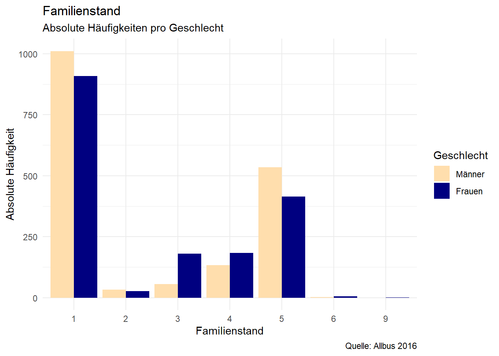
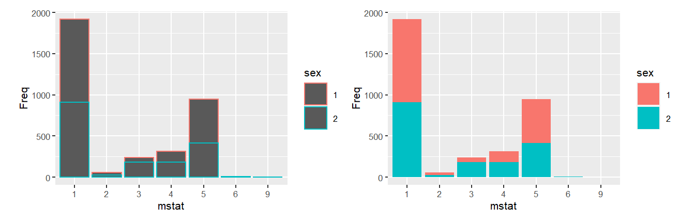
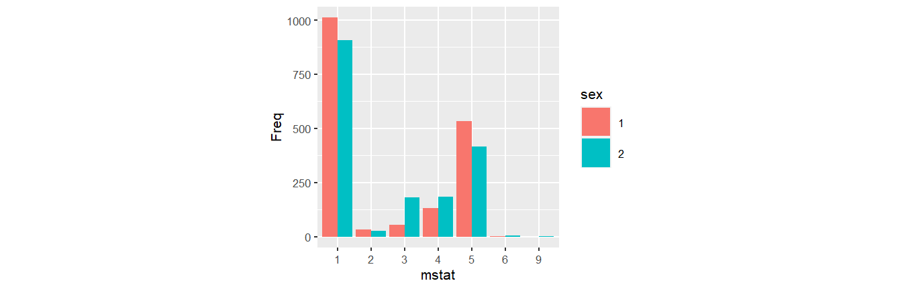
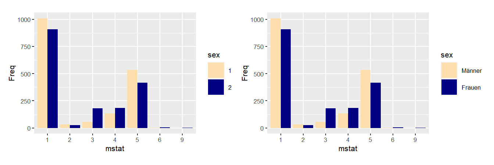
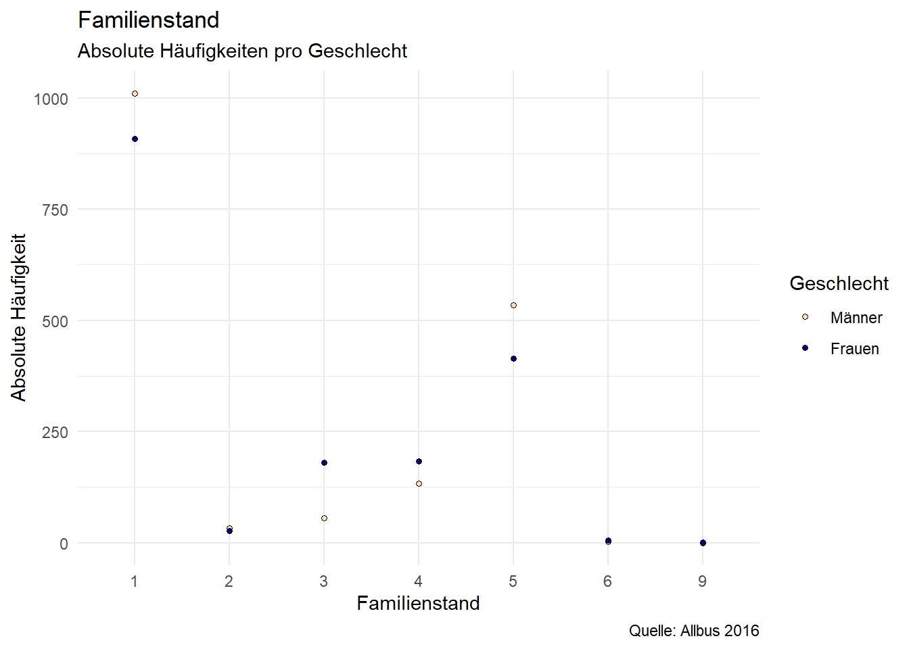
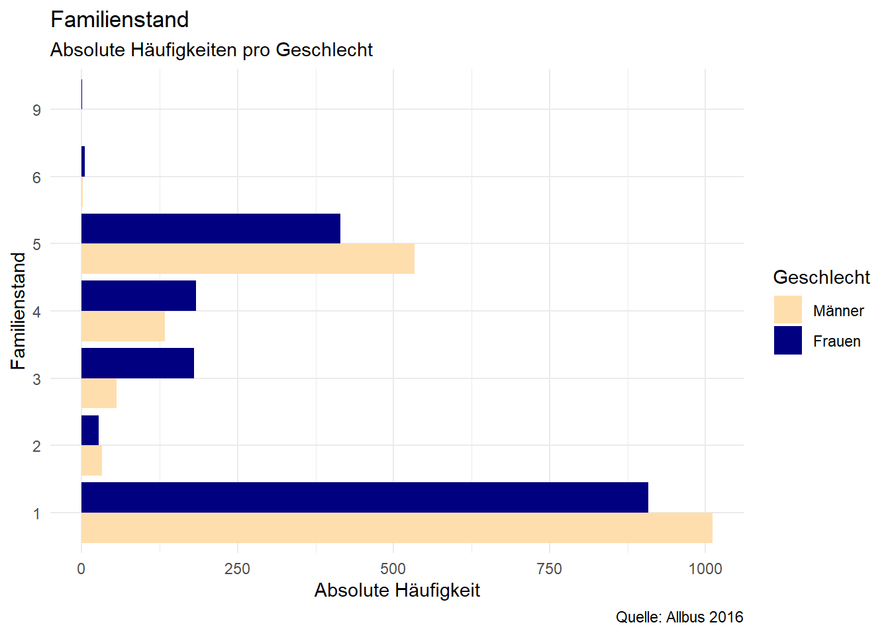
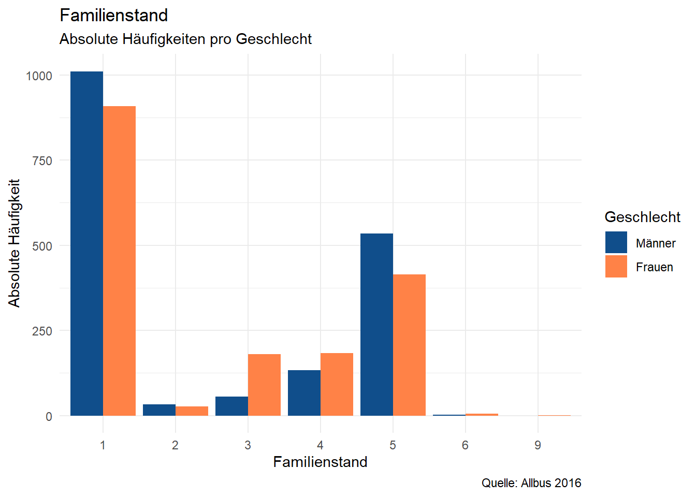
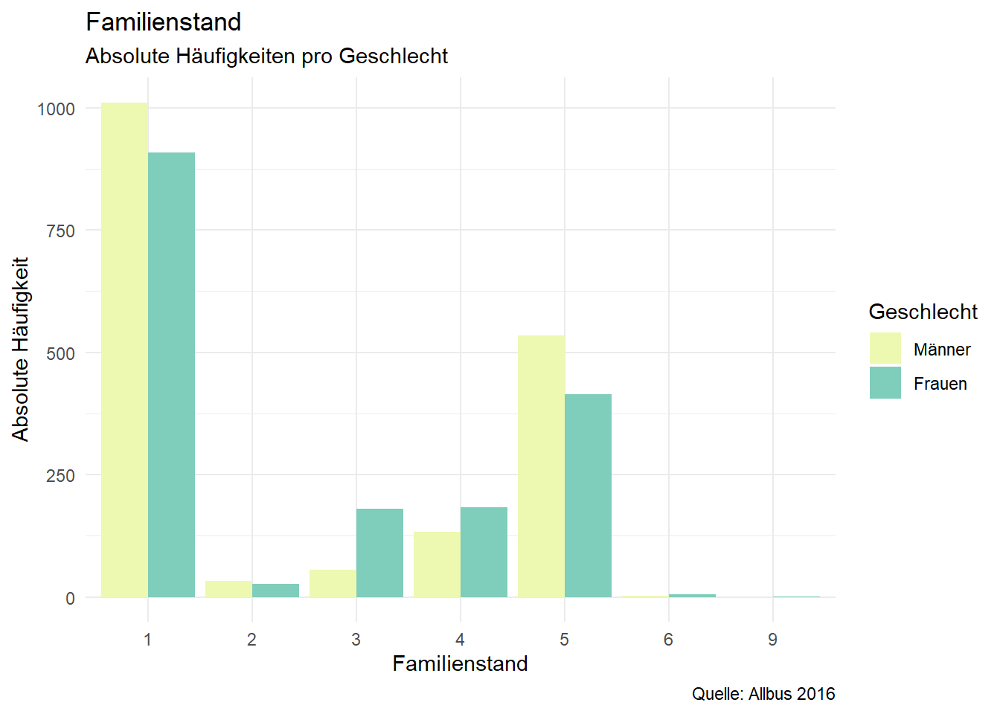
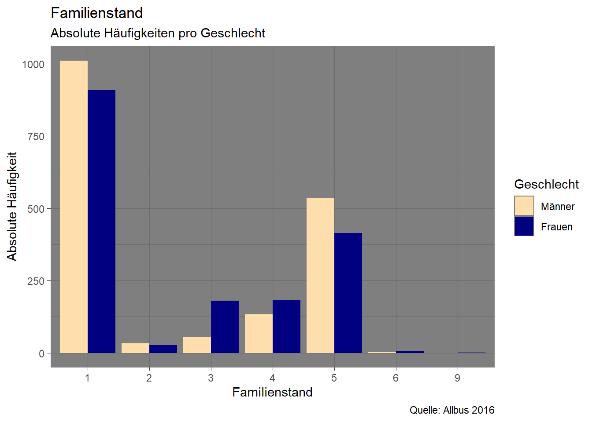

table(a16$mstat)
-9 1 2 3 4 5 6 9
2 1919 60 236 316 949 7 1 a16$mstat[a16$mstat < 0] <- NA
table(a16$mstat)
1 2 3 4 5 6 9
1919 60 236 316 949 7 1 In dieser Session beschäftigten wir uns mit den Familienstandsangaben aus der Variable mstat. Wie vergangene Woche müssen wir vorab die negativen Werte (-9, siehe Codebuch) mit NA überschreiben:
table(a16$mstat)
-9 1 2 3 4 5 6 9
2 1919 60 236 316 949 7 1 a16$mstat[a16$mstat < 0] <- NA
table(a16$mstat)
1 2 3 4 5 6 9
1919 60 236 316 949 7 1 Aus Kontingenztabellen erfahren wir, wie häufig Merkmalskombinationen auftreten. Auch für Kontingenztabellen können wir table() verwenden. Zum Beispiel können wir uns eine Tabelle anzeigen lassen, die uns die Häufigkeiten des Familienstatus getrennt nach Geschlechtern zeigt:
table(a16$sex, a16$mstat)
1 2 3 4 5 6 9
1 1011 33 56 133 534 2 0
2 908 27 180 183 415 5 1Wir erkennen aus dieser Tabelle beispielsweise, dass 415 Befragte weiblich (sex=2) und ledig (mstat = 5) sind.
Eine Alternative zu table() ist xtabs(). Hier werden die Spalten und Zeilen beschriftet. Der Übersichtlichkeit halber verwenden wir diese Darstellung, alle Operationen sind aber genauso auch mit table möglich. Da wir mit dieser Kontingenztabelle noch etwas weiter arbeiten werden, legen wir sie unter kt ab:
xtabs(~sex+mstat, data = a16) mstat
sex 1 2 3 4 5 6 9
1 1011 33 56 133 534 2 0
2 908 27 180 183 415 5 1kt <- xtabs(~sex+mstat, data = a16)
kt mstat
sex 1 2 3 4 5 6 9
1 1011 33 56 133 534 2 0
2 908 27 180 183 415 5 1Auch hier können wir uns die relativen Häufigkeiten anzeigen lassen, indem wir prop.table() anwenden:
prop.table(kt) mstat
sex 1 2 3 4 5
1 0.2898509174 0.0094610092 0.0160550459 0.0381307339 0.1530963303
2 0.2603211009 0.0077408257 0.0516055046 0.0524655963 0.1189793578
mstat
sex 6 9
1 0.0005733945 0.0000000000
2 0.0014334862 0.0002866972Die hier dargestellten relativen Häufigkeiten beziehen sich jeweils auf die Gesamtzahl der Befragten. Formal dargestellt wird also für die Kombination weiblich (sex=2) und ledig (mstat = 5) die Anzahl ledigen Frauen durch die Anzahl aller Befragten geteilt: \(\frac{Anzahl\,lediger\,Frauen}{Gesamtzahl\,der\,Befragten}\) - Wir können also aus dieser Tabelle ablesen dass 11,9% der Befragten weiblich und ledig sind.
Wir können diese Tabelle auch mit Zeilen- und Spaltenprozenten anzeigen lassen, indem wir die Option margin verwenden. margin=1 liefert die Zeilenprozente, margin=2 die Spaltenprozente.1
prop.table(kt,margin = 1) mstat
sex 1 2 3 4 5 6 9
1 0.5715 0.0187 0.0317 0.0752 0.3019 0.0011 0.0000
2 0.5282 0.0157 0.1047 0.1065 0.2414 0.0029 0.0006prop.table(kt,margin = 2) mstat
sex 1 2 3 4 5 6 9
1 0.5268 0.5500 0.2373 0.4209 0.5627 0.2857 0.0000
2 0.4732 0.4500 0.7627 0.5791 0.4373 0.7143 1.0000Achtung! Damit ändert sich jeweils die Interpretation der Tabelle! Wir ändern durch margin die Bezugsgröße oder formal ausgedrückt den Nenner:
24,14% der befragten Frauen sind ledig”43,73% der ledigen Befragten sind Frauen”Unter kt hatten wir das Ergebnis des xtabs-Befehls abgelegt: xtabs(~sex+mstat, data = a16). Wenn wir also alles “ausschreiben”, dann ergibt sich folgender, verschachtelter Befehl:
round( prop.table( xtabs(~sex+mstat, data = a16), margin = 1) ,2) mstat
sex 1 2 3 4 5 6 9
1 0.57 0.02 0.03 0.08 0.30 0.00 0.00
2 0.53 0.02 0.10 0.11 0.24 0.00 0.00Diese Befehlsschachtel können wir mit der sog. Pipe %>% auflösen und besser darstellen. %>% steht dabei einfach für “und dann”. Die Pipe ist unter anderem Teil des Pakets dplyr, welches wir in Zukunft häufiger verwenden werden:
install.packages("dplyr")library(dplyr)Mit der Pipe sieht die Befehlsschachtel dann so aus und wir können sie von links nach rechts lesen:
xtabs(~sex+mstat, data = a16) %>% prop.table(., margin = 1) %>% round(.,2) mstat
sex 1 2 3 4 5 6 9
1 0.57 0.02 0.03 0.08 0.30 0.00 0.00
2 0.53 0.02 0.10 0.11 0.24 0.00 0.00Der Punkt . steht jeweils für das Ergebnis des vorherigen Schritts. Hier also:
%>%)margin = 1 und dann (%>%)Tipp:
%>%kann mit STRG+SHIFT+m (cmd+shift+m für Mac) eingefügt werden.
Häufig werden relative Häufigkeiten aber nicht in Tabellen dargestellt, sondern mit Hilfe einer Visualisierung - beliebt sind dabei Balkendiagramme. Im Folgenden werden wir eine Möglichkeit kennenlernen, die gerade erstellte Kontingenztabelle so zu visualisieren:

Nach der Installation und der Aktivierung von ggplot2 können wir uns der Logik dieses Pakets widmen. ggplot2 ist die Umsetzung des Konzepts der “layered grammar of graphics” in R. Die Idee dieses Visualisierungssystems ist es, Datenvisualisierung in Parameter zu unterteilen: der zugrundeliegende Datensatz, die darzustellenden Variablen, die Wahl der darzustellenden Formen, das Koordinatensystem, Skalen und statistische Transformationen. Ein Standardbefehl in ggplot2 sieht ungefähr so aus:
ggplot(data = datensatz, aes(x = var1, y = var2, fill = var3)) +
geom_col() +
labs(title= "Titel", subtitle = "Untertitel") +
theme_bw()Wir rufen also zunächst mit ggplot() eine Darstellung auf. In den weiteren Argumenten werden dann weitere Aspekte festgelegt:
data = geben wir den data.frame an, den wir darstellen möchtenaes() legen fest, welche Variablen dargestellt werden sollen: hier also var1 auf der x-Achse, var2 auf der y-Achse und var3 soll die Farbgebung festlegengeom_.. geben die Art der Darstellung an, zB. geom_point für Punkt- und geom_col für Säulendiagramme.labs können wir Beschriftungen angeben, zB. einen Titel vergeben oder die Achsenbeschriftungen anpassentheme_... legen das Design der Graphik fest, zB. schwarz/weiße Achsen- und Hintergrundfarben mit theme_bw()Wir arbeiten uns also jetzt durch die einzelnen layer/Schichten der Grafik:
data = : Datengrundlage für unsere Graphik ist die Tabelle mit Familienstandsangaben nach Geschlecht.
kt mstat
sex 1 2 3 4 5 6 9
1 1011 33 56 133 534 2 0
2 908 27 180 183 415 5 1Zunächst müssen wir diese Kontingenztabelle in einen data.frame umwandeln:
tab_df <- data.frame( kt )
class(tab_df)[1] "data.frame"head(tab_df, n=3) ## zur Kontrolle sex mstat Freq
1 1 1 1011
2 2 1 908
3 1 2 33aes: Diese Werte wollen wir also in einem Säulendiagramm darstellen, sodass die Familienstandausprägungen auf der x-Achse abgetragen sind und auf der y-Achse die jeweiligen Häufigkeiten (Freq):
ggplot(data = tab_df, aes(x = mstat, y = Freq))geom: Wenn wir nur diese Angaben machen, bekommen wir lediglich ein leeres Koordinatensystem - warum? Weil wir noch nicht angegeben haben, welche Form der Darstellung wir gerne möchten. Dazu muss wir ein geom_ angeben, für Säulendiagramme ist das geom_col(), diese hängen wir an den ggplot-Befehl mit + an:
ggplot(data = tab_df, aes(x = mstat, y = Freq)) + geom_col()Das sieht soweit schon ganz gut aus, allerdings werden die Säulen noch nicht getrennt nach Geschlecht dargestellt. Wir haben sex auch noch nicht in aes() angegeben. Das Geschlecht soll die Färbung der Balken vorgeben, diese können wir in aes mit fill und color angeben. color ist dabei jeweils die Farbe des Rands, fill die Flächenfarbe eines Objekts. Beide Optionen können wir in aes() angeben:
ggplot(data = tab_df, aes(x = mstat, y = Freq, color= sex)) + geom_col()
ggplot(data = tab_df, aes(x = mstat, y = Freq, fill = sex)) + geom_col() 
Natürlich kann man auch color als auch fill angeben (nicht dargestellt):
ggplot(data = tab_df, aes(x = mstat, y = Freq, color = sex , fill = sex)) + geom_col() Da die Flächenfarben deutlich besser erkennbar sind als die Umrissfarben, beschränken wir uns im Sinne der Übersichtlichkeit auf fill. Um die Säulen statt aufeinander nebeneinander anzuordnen müssen wir die Option position=position_dodge() in geom_col angeben:
ggplot(data = tab_df, aes(x = mstat, y = Freq, fill = sex)) +
geom_col(position=position_dodge()) 
Außerdem können wir mit scale_fill_manual2 selbst Farben angeben, eine Liste möglicher Farben findet sich hier.
ggplot(data = tab_df, aes(x = mstat, y = Freq, fill = sex)) +
geom_col(position=position_dodge()) +
scale_fill_manual(values = c("navajowhite","navy"))Wir können mit den Optionen breaks und labels zudem auch die Beschriftung der Legende bearbeiten. Dazu geben wir zunächst in breaks die Ausprägungen der Variable Geschlecht an und dann in der gleichen Reihenfolge die zu vergebenden Labels:
ggplot(data = tab_df, aes(x = mstat, y = Freq, fill = sex)) +
geom_col(position=position_dodge()) +
scale_fill_manual(values = c("navajowhite","navy"),
breaks = c(1,2), labels = c("Männer", "Frauen") )
Abschließend passen wir dann noch mit labs die Beschriftungen an, folgende Optionen haben wir:
title: Überschrift für die Graphiksubtitle: Unterzeile zur Überschriftcaption: Anmerkung unterhalb der Graphikx: x-Achsenbeschriftungy: y-Achsenbeschriftungfill: Beschriftung für die Legende, wenn fill in aes() angegeben wurdecolor: Beschriftung für die Legende, wenn color in aes() angegeben wurdeAußerdem können wir mit theme_ ein anderes Design auswählen, zB. mit theme_minimal() einen weißen Hintergrund mit grauen Markierungslinien (weitere Beispiele in den Hinweisen unter Themes)
ggplot(data = tab_df, aes(x = mstat, y = Freq, fill = sex)) +
geom_col(position=position_dodge()) +
scale_fill_manual(values = c("navajowhite","navy"),
breaks = c(1,2), labels = c("Männer", "Frauen") ) +
labs(title = "Familienstand",
subtitle = "Absolute Häufigkeiten pro Geschlecht",
caption = "Quelle: Allbus 2016",
x = "Familienstand",
y = "Absolute Häufigkeit",
fill = "Geschlecht" ) +
theme_minimal()
Der Vorteil von ggplot2 ist dann unter anderem, dass sich für eine andere Darstellungsform die bestehenden Befehle einfach übernehmen lassen. zB müssen wir für ein Punktediagramm lediglich geom_col durch geom_point ersetzen:
ggplot(data = tab_df , aes(x = mstat, y = Freq, fill = sex )) +
geom_point(shape = 21, size = 1.25) +
theme_minimal() +
scale_fill_manual(values = c("navajowhite","navy"),
breaks = c(1,2), labels = c("Männer", "Frauen")) +
labs(title = "Familienstand", subtitle = "Absolute Häufigkeiten pro Geschlecht",
caption = "Quelle: Allbus 2016",x = "Familienstand",
y = "Absolute Häufigkeit",fill = "Geschlecht" ) 
Wir können mit coord_flip() das Säulendiagramm ganz einfach in ein Balkendiagramm verwandeln:
ggplot(data = tab_df , aes(x = mstat, y = Freq, fill = sex )) +
geom_col( position=position_dodge()) +
theme_minimal() +
scale_fill_manual(values = c("navajowhite","navy"),
breaks = c(1,2), labels = c("Männer", "Frauen")) +
labs(title = "Familienstand",subtitle = "Absolute Häufigkeiten pro Geschlecht",
caption = "Quelle: Allbus 2016",x = "Familienstand",
y = "Absolute Häufigkeit",fill = "Geschlecht" ) +
coord_flip()
sex und educ. Welche Merkmalskombination ist die häufigste? Denken Sie daran, fehlende Werte mit NA auszuschließen.sex und gkpol. Welche Merkmalskombination ist die häufigste? Denken Sie daran, fehlende Werte mit NA auszuschließen.scale_fill_manual (Siehe Abschnitte Farben und ColorBreweR unter “weitere Optionen”)geom_line() eine Linie ein. Für geom_line() ist zusätzliche die Gruppierung für die zu verbindenden Punkte anzugeben (aes(......, group = sex))size = 2 die Göße und mit shape = auch die Formen der Punkte verändern, siehe hierNeben den im Beispiel verwendeten Farben für fill können natürlich auch noch unzählige weitere Farben in scale_fill_manual verwendet werden. Hier findet sich eine Übersicht.
ggplot(data = tab_df, aes(x = mstat, y = Freq, fill = sex)) +
geom_col(position=position_dodge()) +
scale_fill_manual(values = c("dodgerblue4","sienna1"),
breaks = c(1,2), labels = c("Männer", "Frauen") ) +
labs(title = "Familienstand",subtitle = "Absolute Häufigkeiten pro Geschlecht",
caption = "Quelle: Allbus 2016",x = "Familienstand",
y = "Absolute Häufigkeit",fill = "Geschlecht" ) + theme_minimal()
Alternativ zur manuellen Auswahl der Farben mit scale_fill_manual können mit scale_fill_brewer() auch vorgegebene Farbpaletten des colorbrewer verwendet werden. Dazu muss lediglich scale_fill_brewer() anstelle von scale_fill_manual angeben werden und statt values eine der Paletten - eine Übersicht findet sich hier: http://colorbrewer2.org/
ggplot(data = tab_df, aes(x = mstat, y = Freq, fill = sex)) +
geom_col(position=position_dodge()) +
scale_fill_brewer(palette = "YlGnBu",
breaks = c(1,2), labels = c("Männer", "Frauen") ) +
labs(title = "Familienstand",subtitle = "Absolute Häufigkeiten pro Geschlecht",
caption = "Quelle: Allbus 2016", x = "Familienstand",
y = "Absolute Häufigkeit",fill = "Geschlecht" ) + theme_minimal()
Neben theme_minimal() gibt es noch weitere Designs: eine Liste findet sich hier. Hier ein Beispiel mit theme_dark():
ggplot(data = tab_df, aes(x = mstat, y = Freq, fill = sex)) +
geom_col(position=position_dodge()) +
scale_fill_manual(values = c("navajowhite","navy"),
breaks = c(1,2), labels = c("Männer", "Frauen") ) +
labs(title = "Familienstand",subtitle = "Absolute Häufigkeiten pro Geschlecht",
caption = "Quelle: Allbus 2016",x = "Familienstand",
y = "Absolute Häufigkeit",fill = "Geschlecht" ) +
theme_dark()
Es muss also lediglich das letzte Argument (theme_..) angepasst werden. Weitere Themes sind zB: theme_light(), theme_classic(), theme_void() oder theme_bw()